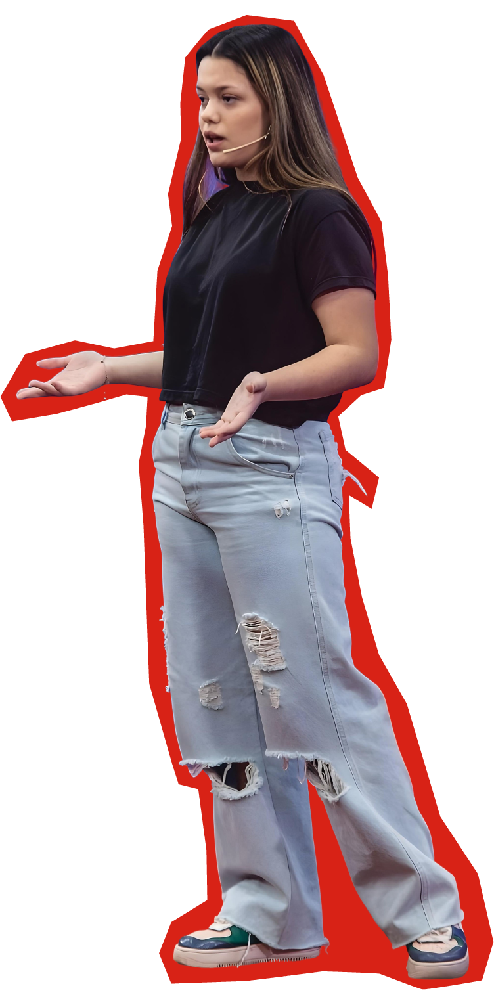
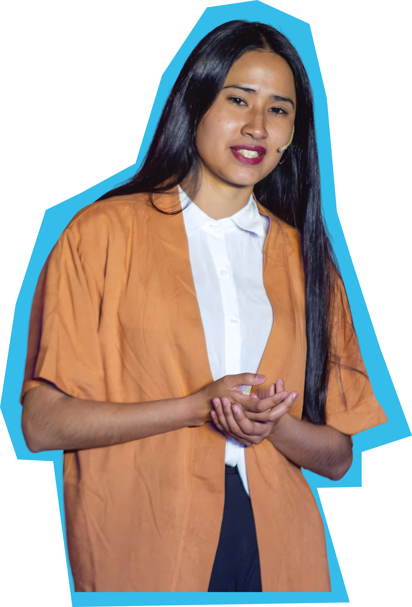
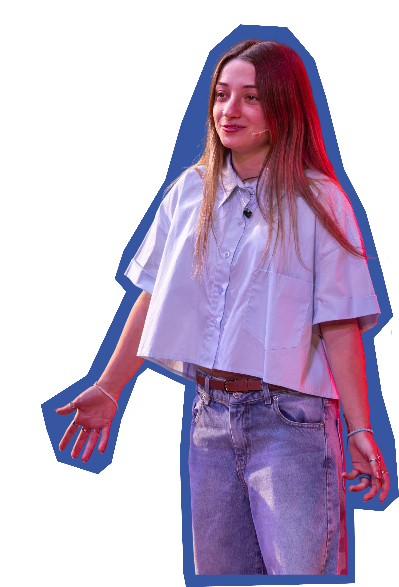
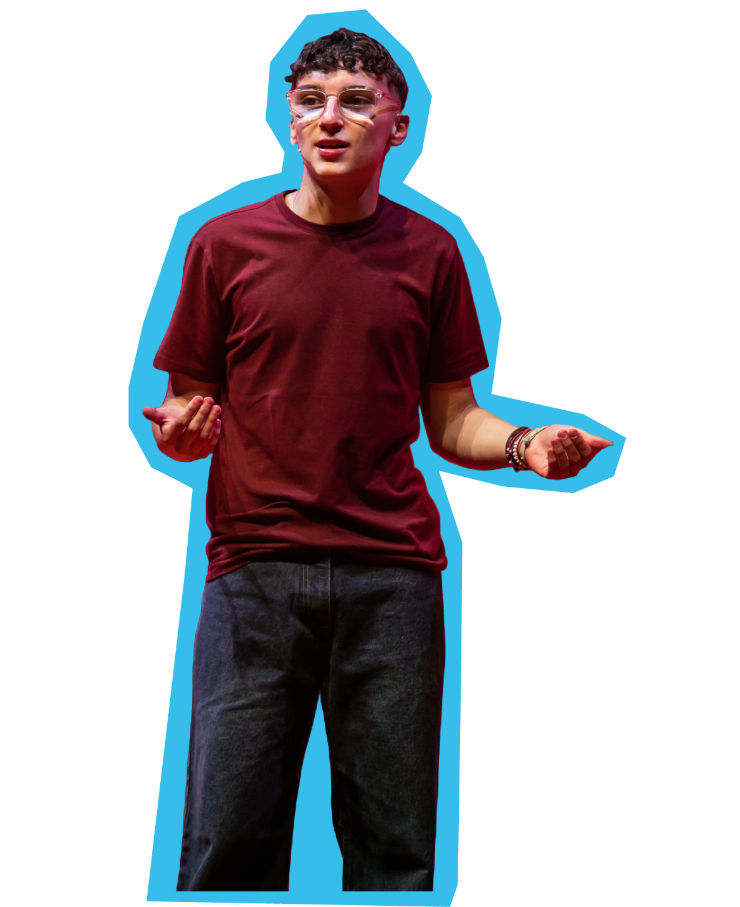
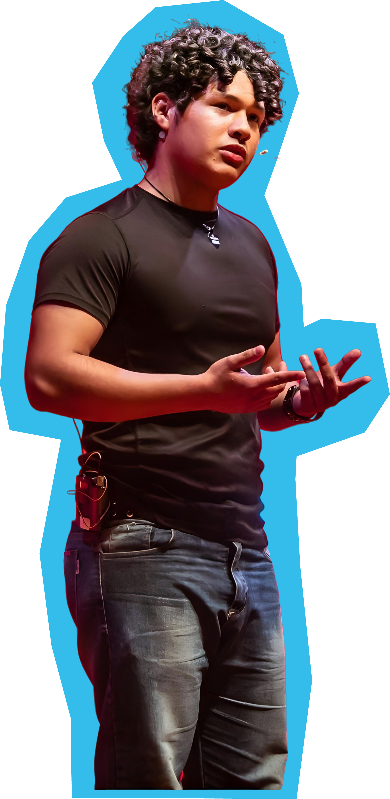

Clubes TED‑Ed Benei Tikva
Tu idea merece un escenario.
El primer Club TED‑Ed de Benei Tikva.
Diez semanas. Una charla. Tu voz.
01 / 03
Una idea.
02 / 03
Puede empezar una conversación.
03 / 03
Puede cambiar un aula.

Caras reales. Voces reales. Esta es la familia TED‑Ed.


— Cómo funciona
El viaje, en cinco actos.
-
Workshops semanales
Diez encuentros. Pensamiento, escritura, voz. La caja de herramientas de un speaker TED.
-
Mentorías 1 a 1
Cada participante, un mentor. Acompañamiento real para encontrar tu ángulo.
-
Tu idea, tu charla
Desarrollás el tema que te quema. No el que suena lindo: el que necesitás decir.
-
Ensayo + feedback
Iteración hasta que la charla sea inconfundiblemente tuya.
-
Evento final TED
Escenario. Público real. Círculo rojo. Tu momento.

— FAQ
Lo que vas a preguntar.
¿Para quién es?
Para estudiantes de secundaria de la comunidad judía. No necesitás experiencia previa, solo ganas. Si tenés una pregunta que no te deja dormir y querés que tu voz se escuche, esto es para vos. ¿Dudas? Escribinos a contacto@tedbeneitikva.org.
¿Cuánto tarda la postulación?
Tres minutos. Lo importante no es lo que pongas en el formulario, es animarte.
¿Necesito experiencia previa en oratoria?
No. Lo único indispensable es que tengas ganas de decir algo. El resto lo construimos juntos en las diez semanas.
¿Tiene costo?
Es gratis. El Club existe gracias a Benei Tikva y a las organizaciones aliadas.
¿Cuánto dura el programa?
Diez semanas. Un encuentro por semana. La última semana cerrás con tu charla TED frente a público real.
¿Qué pasa al final?
Das tu charla TED. Iluminación, escenario, círculo rojo. Las charlas se filman y quedan publicadas para que las puedas compartir.
¿Puedo anotarme con amigos?
100%. La cohorte funciona mejor cuando hay química entre los participantes. Anotate con quien quieras.
¿Qué pasa si no estoy seguro de si soy judío?
Escribinos a contacto@tedbeneitikva.org y lo averiguamos juntos. Sin vueltas.
¿Hay selección?
Sí. Buscamos compromiso, no perfección. Si tenés algo para decir y tiempo para dedicarle, tenés todas las chances.
¿A qué edades apunta?
Adolescentes y jóvenes en edad de secundaria.

— Cohorte 2026 · Cupos limitados
¿Y vos,
qué tenés para decir?
Postulate ahora
Tarda 3 minutos. Lo importante es que te animes.